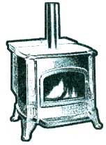
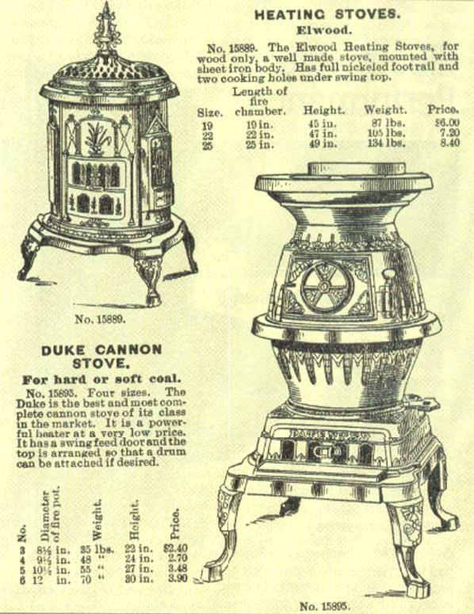

Waiting for Gingrich.
An environmentalist is faced with two primary objectives.
1. To husband the Earth, offering leadership, know-how, and wisdom (when you find it) in stewardship of the land and waters-including strong support for the laws and government agencies created to correct the environmental mistakes that mankind has made in a mere thousand years or two.
2. To encourage self-reliance and sturdy independence on the land-in pursuit of a life of natural virtue, using little and wasting nothing that can't be replaced. "Walk Softly on the Earth, Leaving Only Footprints."
These pursuits are normally perfectly compatible. But when they do come into conflict-say, if a homesteader's privy leaches into a mountain stream-MOTHER has invariably held that Earth comes first and individual interests come second (especially if other readers live downstream).
AIR REGULATIONS APPROPRIATE FOR COLORADO SIMPLY SHOULD NOT APPLY EVERYWHERE ELSE.
She'd demand that the privy be moved and its drainage field ditched deep and diverted to a drywell-and quick. Time was, she'd go along with a government agency or a private lawsuit demanding a clean-up as well-even if the reader's independence was threatened. We celebrated when DDT was banned and the Great Lakes cleanup started. And we cheered even louder when the peregrine falcon (its reproductive ability once severely threatened by DDT) came off the Endangered Species list and the banks of Cleveland's Cuyahoga River (that once caught fire from accumulated pollution) became a bathing beach once again.
But, as early as the late '80s, it was becoming increasingly apparent that some government environmental agencies were overstepping legitimate authority, and some of the Green non-profits and "public interest" groups were less interested in benefiting the environment than forcing an obsolete socialistic political agenda.
Reluctantly, we came to believe that simple lifestyle options-in housing, transportation, home food and energy production, home schooling, and even our Second Amendment rights to protect life and property-that made the good country life possible were slowly being curtailed by ever more specious, petty, or counterproductive regulations imposed by agencies she once encouraged...especially "one-size-fits-all" policies of the Environmental Protection Agency, and in particular its uniform nationwide standard for wood-burning stove emissions.
Nobody can argue with restrictions on wood fires (or any other gas or particulate generators) in the Los Angeles basin or Vail, Colorado, ski bowl, where atmospheric inversions trap auto exhaust and God knows what other effusions from too many post-Industrial Age humans crowding an ecosystem able to support a normal population of bears and blue jays and perhaps a few stone-age Native Americans.
But, with the wood heat fad that followed the OPEC oil crises of the '70s, these fragile environments were overloaded with the smoke from too many hobby woodstoves that were ineptly operated by folks more interested in being politically correct than staying warm. Wood smoke turned the normal smog a greasy creosote-brown that dyed hanging laundry and even ate holes in the siding of mountainside homes. Lord knows what it could do to the lungs of an ordinary mortal.
But, it bespeaks the death of common sense when the EPA ham-handedly imposed L.A./Vail-style restrictions on the rural 90 percent of North America where atmospheric inversions are unknown and where most wood smoke drifts away to biodegrade sweetly, just as it has done since the first lightning bolt started the first fire in a forest of tree ferns during the carboniferous period 345 million years ago. And, which it continues to do today- when natural fires in the West burn hundreds of thousand of acres of forest (thousands more trees than are cut for cord wood) each year...with no long-term effect on air quality. Many if not most of MOTHER'S readers who elect country living also choose to step off the money-chase and live poor by conventional standards. But those EPA restrictions offer them precious few choices in new-built woodstoves, choices that are too often tiny "hi-tecs" that can't heat a big room, clunky catalytics or mechanized pellet stoves costing $1,000 and up, or site-built firestoves costing $5,000!
Want to know EPA's solution for the poor? "[F]or those who cannot afford the initial costs of a new certified wood heater, this regulation does not restrict the sale of secondhand stoves. The secondhand stove market is a major source of inexpensive wood heating appliances." (EPA, 40 CFR Part 60: Standards of Performance for New Stationary Sources; New Residential Wood Heaters; Final Rule. Federal Register, Part II, v.53, No.38, Friday, February 26, 1988 pgh. 3, col. 1., p. 5864.)
"Let 'em buy used." It reminds me of Marie Antoinette's response when told the Parisian poor couldn't buy bread: "Let them eat cake." Marie lost her head over that one...but the EPA unfortunately didn't. Instead they had the arrogance to prohibit country folks from making their own stoves out of old oil drums or whatever. Why? Because of "...sales that will be lost by manufacturers of wood heaters who have incurred the additional expense of [building "government" stoves]." The whole emissions program could therefore only be enjoyed by those manufacturers who could re-tool their entire stove line. The end result is that Government forced a particular market upon everyone. Probably not what the founding fathers intended.
The Dilemma
On learning this, MOTHER shifted on the wood-smoke debate-recalling her support from government and passing it totally to her readers. Not that she's less in favor of continued environmental protection. It's just that the environmental laws that you and I helped effect through our elected representatives are being implemented by a bunch of bureaucrats determined to run our country lives from the climate-controlled comfort of their offices in downtown, center-city Washington, D.C.-in pristine ignorance of the problems we face.
Incensed as we are at bureaucratic excesses, we fear most of all that excessive zeal of the "environmentalist police" that will turn public opinion against environmental protection itself-not just the few apparatchik who are proving the old adage, "power corrupts."
And, that's not her only conflict... she is also convinced that EPA is a major cause of the steady decline the wood heat industry has experienced since the '80s-years in which the market has suffered from increasingly sluggish sales A major initial cause, of course, was the fall in oil prices that followed the dissolution of the OPEC cartel. But, the enduring decline in stove sales is at least as attributable to the loss of vitality by an industry that is being smothered in its own restricted emissions.
THE WONDERFUL VARIETY OF "AIRTIGHT" STOVES WE HAD TO CHOOSE FROM IN THE '70S HAS VANISHED, POSSIBLY FOREVER.
No Joy
Wood heat quite simply isn't fun any more. If you were around in the '70s- heyday of modern wood heat-you'll remember the wonderful variety of "airtight" stoves we had to choose from:
potbellies, parlor heaters, laundry stoves, 6-Platers, Princess Kitchen Ranges, Franklin Fireplaces, and other domestic and Taiwanese reproductions of 18th and 19th century iron stoves. Plus elegant Morsos and Petit Godins and Jotuls and other European imports in vibrant Dansk enamel colors, and Fisher's family of Bears, Vermont Casting's Defiant and Vigilant, and the Woodsmen and Arctics, Downdrafters and Baseburners, and a thousand other models made by 400 firms in Canada and the U.S. of welded steel, soapstone, Russian tin, and cast iron.
Sure, they smoked if operated in air-starved mode. And too many were installed ineptly and dangerously. And too many flues and stovepipes went uncleaned for so long they leaked and dripped creosote all over the floor, and posed real fire hazards. But we've learned to handle wood fires in 25 years, and it would be good to offer new woodburners some reason to accept the challenge of staying warm through the hard labor of their own hands. Now, the EPA offers them only two choices in a new-built, efficient log burner: a generally undersized, expensive "hi-tec" or an oversized and equally expensive catalytic stove. External ornamentation aside, "government stoves" are all the same: too often lacking fire and joy.
No wonder the industry is faltering. You can count the successful stove makers on the fingers of one hand (check the ads in MOTHER or any other magazine). And those that are staying afloat do so only by selling more and more fossil-fuel alternative stoves such as the gas-log models. And who can blame them? They can only sell what the EPA certifies. And in so choking the market with regulations, the EPA is
choking wood heat in America.
We might be tempted to welcome this development. It means that wood heat has come back home to the country where it belongs-even if we do have to chisel a new set of fire bricks to reline the old Klondike so she'll keep on pumping out heat for another generation. Cordwood will be less in demand, thus cheaper-and a supply of well-dried hardwood will be a whole lot easier to find if the home-cut runs short in February.
But, it hoists us onto another dilemma. What may be good for the country-living, wood-heating readers is not good for a planet where more wars have been waged over energy resources than anything else but the name of God. Hydro and wind and solar power are promising and nuclear fusion may become a reality...someday. But here and now-today in North America- wood is plentiful and is our only really practical self-renewing heating fuel. Its responsible use should be encouraged.
But, durned if it isn't government and their wood-stove emissions-controls that are killing the very industry they were supposed to give a new breath of life.
CRITICS OF THE EPA’S OVERREGULATION CHEERED WHEN GINGRICH'S BAND OF BEFORMERS MARCHED IN, BUT WE WILL STAND TO LOSE BOTH CLEAN AIR AND WATER ACTS IN THE PROCESS.
Newt to the Rescue?
How's that old Chinese curse go..."May you live to see all your dreams fulfilled"? Well, we wanted some deregulation and apparently we've gotten it. Newt Gingrich and the new gang in Congress were elected by voters fed up with an overgrown government misusing war powers in an era when the big wars have all been won-and especially furious at the excesses of EPA and friends. A promising development. But soon they began comparing EPA tactics to Nazi Brownshirts, vowing to gut the agency-and worse-to pull so many teeth from the Clean Air, Clean Water, and Endangered Species Acts that we'd undo in the stroke of a pen what it took 20 years to accomplish. The baby was all set to be tossed out with the bathwater, and we watched each Washington reform summit with hand-wringing anticipation.
Fortunately, the new crowd's first attempts at drastic environmental reform have been rejected-and rejected with an alacrity and firmness that is truly encouraging. On July 29, 1995, in a repudiation of powerful timber interests, the Supreme Court reversed an earlier Federal Appeals Court ruling and effectively broadened the Endangered Species Act of 1973 to protect not just Mother's critters but their habitat as well-a clear and long-needed victory for environmental common sense (the Apache trout just came off the endangered list-but it wont stay off long without pristine mountain streams to live in.). And on July 28, the House narrowly defeated an attempt by its Young Turks to employ the "politics-as-usual" methods they got elected to curtail and heap 17 special-interest-lobbied EPA-limiting provisions on the back of an appropriations bill...without debate.
Whew!
But, they aren't done and EPA will certainly be relieved of many powers it has abused. That's as it should be-if the measures are well thought-out and thoroughly aired in public debate. But, encouraged as she is that the energetic new powers in Washington (suitably constrained by the Court and by clearer heads among their own legislative peers) will bring common sense to environmental regulation, she is still hung out on the horns of a dilemma. If the EPA stove regulations are tossed out, life and fun will return to the industry, we'll have a broader choice of wood heaters again, and use of renewable wood will begin to increase. But, if we take authority for regulating stove emissions back from Big Brother, we are obligated as well to accept responsibility for keeping our own air clean and safe. And, what will the state legislatures do under pressure from timber or industrial interests that carry much more clout on a local level? Worse, what will Congress do when our backs are turned?
For now, we'll have to just live with the dilemma, keep our eyes wide open and our letter-writing pencil sharpened. Because, as we are too inclined to forget, your legislators will only do what you allow them to.
|
 |
 |
|